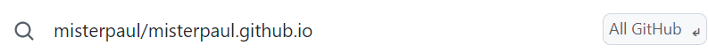
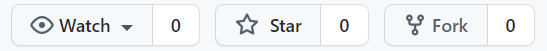
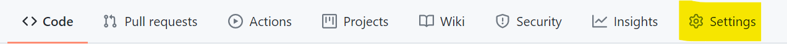
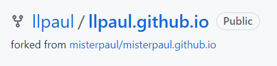
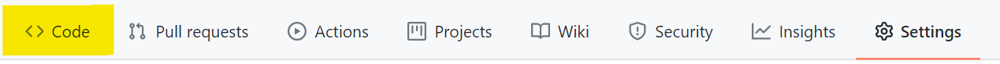
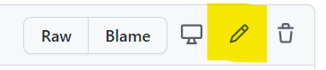

And now for something completely different!
Ok, playing around with changes in the Developer Tools is fun, and super helpful, but it stinks to make a bunch of changes and be unable to save them. Lets change that!
We're going to set you up with Github, a tool that is designed to hold source code.
Activities
- If you don't have a github account, go to github.com and create one. If you already have one, go log in.
- Once you are logged in, fork and rename the misterpaul/misterpaul.github.io repository. To do so, go to the search box in the top left and search for misterpaul/miserpaul.github.io:
You should get a pull down with options where to search as buttons. Select the one that is "All Github."

- Once you've selected the span class="code">misterpaul/misterpaul.github.io repository, you can fork it. Forking the repository makes it your own.
For our purposes, this allows you to use my repository as a starting poing, and make and save your changes, independently of mine. To do so, click the Fork button
in the top right-hand corner of the screen.

-
Now that the code is forked, we need to rename it. Github has a magical feature where, if you name the repository youraccount.github.io it will publish evething to the web.
This is super handy for leaning web technologies.
-
Click on Seetings

-
Make sure you are in the Optionsb> section. Under Repository name, change misterpaul to youraccount
(where youraccount is the name of your GitHub account.) Click Rename.
-
The full name of your repository is shown in the top left corner. After you've changed the name, it should show youraccount / youraccount.github.io,
similar to this, for a user with a github account named llpaul:

-
Congratulations! You now have your own copy of this set of lessons to love and care for. Open a new tab in your browser and go to youraccount.github.io/learningweb/lesson1 and you should see lesson 1.
-
You can't save the changes you make in the Developer Tools directly, but GitHub has two built-in editors, so you can use those to write and save your code. Sometimes you'll want to write
directly in the GitHub editor, and some times it will be better to work in the browser's Developer Tools, and then copy/paste your code into the GitHub editor. Lets go experiment with the two editors.
-
You are probably still in the Settings page. Click on the Code page.

-
Open the learningweb and lesson1 folders.
-
Click on index.html. This will show you the file in read-only mode.
-
Click on the pencil in the top right corner.

This will open the simple editor. Go change some of the content. Keep it simple for now.
-
To save the file, you "commit changes." Go to the bottom of the page, make sure "Commit directly to the main branch" is selected, and click Commit Changes.
-
In about 3-5 minutes, your changes should be visible on the youraccount.github.io/learningweb/lesson1. (it takes a few minutes from when you commit the changes to when they become visible.)